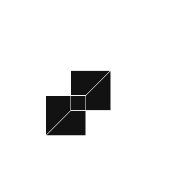

- Vectors and Vector Calculus - because fields don’t move in straight lines, apparently.
- Differential Equations (especially Partial Differential Equations) - for Maxwell's Equations
- Computer Modelling and Simulation - a modern must-have for visualizing how electromagnetic fields behave, especially when textbooks give up.
In the future, I might include a separate page for each of these topics, but here I will briefly visit these topics for revision that is relevant for this course in particular
Introduction to Vectors
Vectors are quantities that have both magnitude and direction. Vectors have some properties that are relevant in this course:
- Vectors can be added.
- Vectors can be scaled.
- Dot Product The result is a scalar. If I have \( \,\, \vec{v} \quad \text{and} \quad \vec{w} \), then dot product = \( |\vec{v}|.|\vec{w}| \, cos(\theta)\)
- Cross Product The result is a vector, and given by, \( \,\,\, |\vec{v}|.|\vec{w}| \, sin(\theta) \)
The direction is normal to the plane of both vectors.
But now, assume a parallelogram, who has the same sides, 'v' and 'w'.... now the area of this parallelogram, will be the area of the rectangle with sides \( \,\, w \,\, \text{and} \,\, v.sin(\theta) \). Interestingly, we find that this result is also the one found in cross-product. $$ \text{Area} = |\vec{v}|.|\vec{w}| \, sin(\theta) $$ This means that area is consequentially a vector quantity, when denoted by two vectors, and it's direction is normal to the surface of the two initial vectors we constructed the figure with. This applies only to flat figures and shapes. But this is not what I'm worried about.
The thing that got me worried, was, that if area of a 2D figure, extends normally out, into the 3rd dimension... (which means area exists in a higher dimension than the parent vectors), then can I safely say that the volume of a 3D object would also have a vector quantity in the fourth dimension? Look, I know that is a ridiculous argument, made by my immature brain, owing to my scarce knowledge of higher mathematics. But then I thought to myself, how would that be possible? The fourth dimension is not a physical dimension... it's time, according to Einstein.. I guess!
SO THEN WHAT IS IT? I did some digging, (and I'm embarrased to admit this, but I had to consult ChatGPT, cause she's faster..!) I found out that the volume of a 3D object is actually a scalar, and consequently, it cannot extend into a higher dimension like a vector. There is this thing called the Scalar Triple Product, to find the volume of a parallelepiped: $$ V = | \vec{u} \cdot (\vec{v} \times \vec{w}) | $$
Now this is a scalar -- no direction; no "out of the paper" vibes. It simply represents the 3D space enclosed. So NO, volume wouldn't morph into 4th dimension (I was excited for a moment, my dumbass thought I actually found a loophole!).
But then I learned that in higher-dimensional math, we can represent volumes as oriented objects, but not as simple vectors. Here, we use things like Wedge Products, Differential Forms, and instead of area vectors and volumes, we have things like 2-forms, 3-forms... none of which are relevant for this course.
Coordinate Systems
We can define the orientation and position of a point using vector notation, but we would need to set a co-ordinate system in order to do that. Let us take the example of the vector : \( \vec{A} = 4 \, \hat{x} + 3\, \hat{y} + 2\, \hat{z}\). This is the usual notation we are used to. But WHY is this the most optimum notation used universally?For a moment, let us define another co-ordiante system, different from the traditional one, where $$ \begin{gather*} \vec{u} = \hat{x} \, ; \quad \vec{v} = \hat{x} + \hat{y} \, ; \quad \vec{w} = \hat{x} + \hat{z} \\ \text{then,} \quad \quad \hat{y} = \vec{v} - \vec{u} \, ; \quad \hat{z} = \vec{w} - \vec{u} \\ \text{so our original vector becomes,} \quad \vec{A} = -\vec{u} + 3 \, \vec{v} + 2\, \vec{w} \end{gather*} $$ This is a rather strange result. The reason is that, to construct w and v. you need to move not only in y and z directions, you also move along x aswell.
Initially we had 4 units in the x-axis, now, to reach the same position in our new coordinate system, we need to go back \( -\vec{u} \). But the answer is correct mathematically nonetheless. We can verify this by performing dot product on the entire vector \( \vec{A} \) to find the coefficient of a building-vector. Let us find the coefficient of \( \hat{x} \), (evidently it should be 4, from the original vector \( \vec{A} \)) in other words, the coefficient of \( \vec{u} \), $$ \begin{gather*} \vec{A} \cdot \vec{u} = (-\vec{u} + 3 \, \vec{v} + 2\, \vec{w}) \cdot \vec{u} \\ \Rightarrow \vec{A} \cdot \vec{u} = -\vec{u}\cdot \vec{u} + 3 \, \vec{v}\cdot \vec{u} + 2\, \vec{w}\cdot \vec{u} \end{gather*} $$ Now if you look closely, $$ \vec{u} \cdot \vec{u} = 1 \, ; \quad \quad \vec{v} \cdot \vec{u} = (\hat{x} + \hat{y}) \cdot \hat{x} = 1 \, ; \quad \quad \vec{w} \cdot \vec{u} = (\hat{x} + \hat{x}) \cdot \hat{x} = 1 $$ Hence the final result gives us: $$ \vec{A} \cdot \vec{u} = -1 + 3 + 2 = 4 $$ What this means for us, is that if we had such a strange co-ordiante system, we couldn't predict ahead of time, how much \( \vec{u}, \, \, \vec{v}\,\, \text{and} \,\,\vec{w} \) we have. For this reason, people have come up with Orthonormal Coordinate Systems.
Orthonormal Coordinate Systems
 In the above example, if we wanted to find out the coefficient of any building vector, we should be able to perform dot product and automatically get the coefficient, which is to say that the remaining dot products should result in zero. $$ \hat{x} \cdot \hat{y} = 0 \ ; \quad \quad \hat{x} \cdot \hat{z} = 0 \ ; \quad \quad \hat{z} \cdot \hat{y} = 0 $$ This means that the angles between the vectors should be \( 90^{\circ} \). This is possible in Cartesian Coordinate Systems, which is an orthonormal coordinate system. This is much more convienient , and people generally do not use non-orthonormal co-ordinate systems unless necessary.